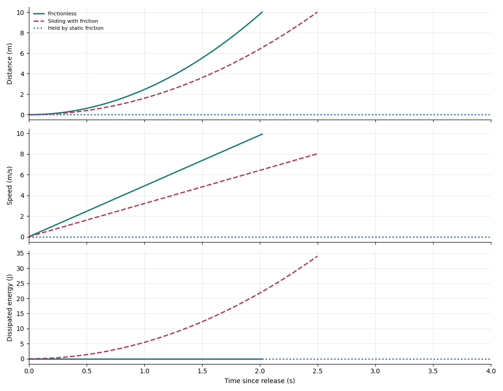

Mechanics / Computational example
Motion on an Inclined Plane
Gravity pulls downhill. Friction decides whether the block moves.
m = 2 kg · θ = 30° · L = 10 m · g = 9.81 m/s²
Force Balance
- Weight, mg
- Normal, N
- Friction, f
- Downhill, mg sin θ
- Net downhill force
- Downhill distance
- Speed
- Acceleration
- Energy dissipated
Selected case (CSV)181 saved Julia samples per case
Three Surfaces, One Ramp
The moving cases end just as the block reaches the foot of the ramp. The stationary case is observed for four seconds.

From Force to Motion
Choose distance s positive down the ramp. The normal balance gives N = mg cos θ. Rest is possible when mg sin θ ≤ μsN. Static friction then matches the downhill pull; it is not automatically at its maximum.
Once the block slips downhill, f = μkN and Newton's second law becomes
a = g (sin θ − μk cos θ).
Integrating from the initial time t0 fixes both constants of integration:
v(t) = v0 + a(t − t0)
s(t) = s0 + v0(t − t0) + ½a(t − t0)².
Here t0 = s0 = v0 = 0. For a sliding release, the arrival time is √(2L/a) and the arrival speed is √(2aL). The mass cancels from the acceleration, but forces and energies still scale with mass.
Where the Energy Goes
With zero gravitational potential at the foot, K = ½mv², U = mg(L − s)sin θ, and the dissipated mechanical energy is Q = fs. Throughout each saved trajectory, K + U + Q = mgL sin θ = 98.1 J.
Frictionless motion converts all 98.1 J into kinetic energy. Sliding friction converts part into thermal/internal energy of the contact system. Static friction does no work on a block that does not move.
Assumptions
A nonrotating block on a fixed straight ramp; constant gravity; Coulomb friction with 0 ≤ μk ≤ μs; no air drag. The animation ends before any collision or change of surface. Force arrows share a scale; the block is drawn larger for visibility.
Reproduce and Reuse
Julia 1.10.12 evaluates the constant-acceleration state with its standard-library matrix exponential. Independent kinematics and work-energy checks verify the saved data.
Download Julia project · Provenance · Article attachment bundle · LaTeX article